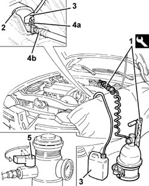
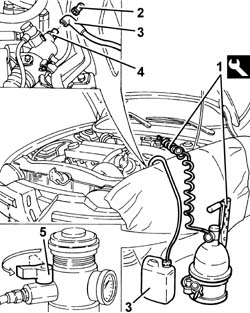

1820B08 Clutch release HYDRAULIC SYSTEM - Bleeding air and restoring level
- Path
- Procedures > 18 CLUTCH > 1820 CLUTCH RELEASE CONTROLS > 1820B HYDRAULIC CLUTCH SYSTEM > 1820B08 Clutch release HYDRAULIC SYSTEM - Bleeding air and restoring level
- Kind
- repair procedure (removal / refitting; the operation number is the code)
- Applies to
- engines: 1.6 TS , 1.8 TS, 2.0 JTS, 2.5 V6, 3.2 V6, 1.9 JTD 8v , 2.0 JTS, 2.4 JTD 10v; all production periods
- Interactive page
- https://sloeber94.github.io/elrnDB-a156/en/#/3237896
Applies to: engines: 1.6 TS , 1.8 TS, 2.0 JTS, 2.0 JTS; all production periods
See op. 5530B10 battery - r+r .
See op. 5530B52 Battery DRIP TRAY/SUPPORT - R.R. .
1. Connect the tool to the brake-clutch fluid reservoir.
 | Name | Country |
|---|---|---|
1 | Brake/clutch bleeding equipment | 1.806.097.001 |
2. Open the protective cover
3. Connect the collection system (pipe and reservoir) to the connector on the clutch hydraulic control actuator.
4. Lift retaining clip (4a) until the first click is heard and remove pipe (4b) sufficiently to uncover the bleed hole.
5. Slowly open the fluid reservoir cock.
Wait until all the air contained in the hydraulic clutch disengagement system has come out.
Fit the pipe fully home in its seat on the hydraulic clutch control actuator and secure with the retaining clip.
Close the protective cover.

Applies to: engines: 1.6 TS , 1.8 TS, 2.0 JTS, 2.0 JTS; all production periods
Remove the collection system.
Remove the bleed equipment.
| Name | Country |
|---|---|---|
- | Brake/clutch bleeding equipment | 1.806.097.001 |
Check correct clutch disengagement and gear engagement.
Check the fluid level in the brake - clutch reservoir is correct.
See Op. 5530B52 Battery DRIP TRAY/SUPPORT - R.R. .
See Op. 5530B10 battery - r+r .
Applies to: engines: 2.5 V6, 3.2 V6, 1.9 JTD 8v , 2.4 JTD 10v; all production periods
5530B52 Battery DRIP TRAY/SUPPORT - R.R.
1. Connect the tool to the brake-clutch fluid reservoir.
| Name | Country |
|---|---|---|
1 | Brake/clutch bleeding equipment | 1.806.097.001 |
2. Remove the protective cap on the master cylinder bleed valve
3. Connect the collection system (pipe and reservoir) to the bleed valve on the master cylinder.
4. Open the bleed valve on the master cylinder.
5. Slowly open the fluid reservoir cock.
Wait until all the air contained in the hydraulic clutch disengagement system has come out.
Close the bleed valve on the master cylinder.

Applies to: engines: 2.5 V6, 3.2 V6, 1.9 JTD 8v , 2.4 JTD 10v; all production periods
Remove the collection system.
Remove the bleed equipment
| Name | Country |
|---|---|---|
- | Brake/clutch bleeding equipment | 1.806.097.001 |
Check correct clutch disengagement and gear engagement.
Check that the disengagement travel of the clutch master cylinder is within the specified tolerance values.
 | Measurement | Value | |
|---|---|---|---|
- | Clutch release travel (mm) | 13.5 |
Topics linked from this page (2)
Topics that link to this page (19)
- E01 CLUTCH NOT RELEASING CORRECTLY
- 0010T67 hydraulic clutch system bleed air
- 1004B10 power unit with manual gearbox - r + r
- 1004B12 power unit with manual gearbox - r+r for versions with a/c
- 1820B20 (Pump) - MASTER CYLINDER R.R.
- 1820B21 (Pump) - MASTER CYLINER R.R. for right hand drive versions
- 1820B30 OPERATING CYLINDER/CLUTCH HYDRAULIC ACTUATOR - R.R.
- 1820B39 hose from clutch reservoir to master cylinder - r r for right han d drive versions
- 1820B40 FLEXIBLE PIPE from clutch reservoir to (pump) - master cylinder R.R.
- 1820B43 RIGID PIPE from clutch reservoir to (pump) - master cylinder R.R. for right hand drive versions
- 1820B45 RIGID supply PIPE from (pump) - master cylinder R.R. for right hand drive versions
- 1820B47 rigid pipe from master cylinder (pump) to vibration damper - r r for right hand drive versions
- 1820B49 Supply PIPE from (pump) - master cylinder R.R.
- 1820B50 hose damper - r r
- 1820B51 rigid input pipe to vibration damper - r r for rhd versions
- 1820B54 hose from damper - r r
- 1820B58 clutch hydraulic circuit vibration damper - r+r
- 2110A10 manual gearbox and differential - r + r
- 3340B53 rigid pipe (one) from master cylinder (pump) to abs hydraulic control unit - r r for rhd versions